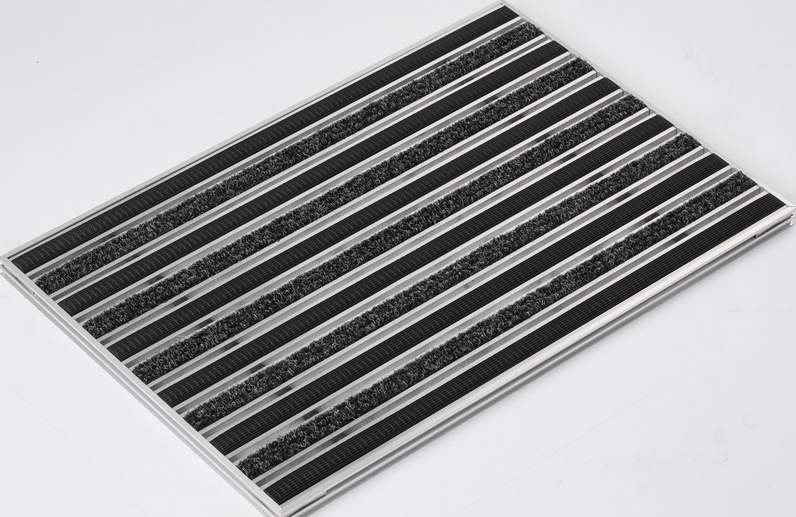

Wycieraczka aluminiowa z mixem rypsu i gumy, profil niski 12/30 mm
Mix tekstylno-gumowy łączy chłonność rypsu z odpornością gumy. Guma zdrapuje większy brud, a ryps wyciera wilgoć z podeszwy. To dobry kompromis, jeśli wycieraczka ma służyć na co dzień i przy zmiennej pogodzie.
Niski profil 12/30 mm jest cienki, więc mieści się we wnęce i pod drzwiami, które otwierają się tuż nad wycieraczką.
Mata 40×60 cm już od 175,20 zł netto (215,50 zł brutto). Cena zależy od wymiaru, dokładną kwotę policzysz w konfiguratorze.
Dane techniczne
| Profil | Profil niski 12/30 mm |
| Wkład | Mix: ryps + guma |
| Wymiar | Na wymiar, dowolna długość i szerokość, także nietypowy kształt |
| Cena za m² | 730,00 zł netto (897,90 zł brutto) |
| Próg najazdowy | Aluminiowy, do dokupienia w konfiguratorze (68 zł netto / mb). Montowany, gdy wycieraczka leży na posadzce, żeby przechodnie się o nią nie potykali |
| Ramka | Aluminiowa ramka kątowa, do wyboru w konfiguratorze |
| Dostawa | Wysyłka na terenie całej Polski |
Do jakich miejsc pasuje ta wycieraczka?
Profil niski to wybór do domów, biur, wnęk, wiatrołapów i miejsc z niewielkim progiem. Wkład, który wybrałeś, najlepiej sprawdzi się tutaj:
- wejście do domu i bloku przy zmiennej pogodzie
- wiatrołap i zadaszone wejście
- biura i sklepy z dużą ilością wejść
Zalety
- dwa wkłady w jednej wycieraczce
- guma zbiera większy brud
- ryps wyciera wilgoć
- dobry stosunek ceny do funkcji
Pielęgnacja
Ryps odkurzaj, gumę w razie potrzeby spłucz lub przetrzyj.
Jak zamówić?
- Zmierz wnękę lub miejsce przed drzwiami: długość i szerokość.
- W konfiguratorze wpisz wymiary, wybierz profil, wkład i kolor.
- Dodaj do koszyka i wyślij zamówienie. Przy nietypowym kształcie użyj kreatora kształtu.
Najczęstsze pytania
Dlaczego warto wybrać mix rypsu i gumy?
Guma zatrzymuje większy brud i wodę, a ryps domyka sprawę i wyciera wilgoć. Dzięki temu wycieraczka dobrze działa zarówno przy suchej, jak i mokrej pogodzie.
Czy mix nadaje się na zewnątrz?
Tak, najlepiej pod zadaszeniem lub we wnęce. Na wejście całkowicie wystawione na deszcz lepsza będzie guma, szczotka albo mix gumy i szczotki.
Czym różni się profil niski 12/30 mm od wysokiego 19/30 mm?
Profil niski 12/30 mm jest cieńszy i pasuje do wnęk, wiatrołapów i miejsc z niewielkim progiem. Profil wysoki 19/30 mm jest mocniejszy i przeznaczony do wejść o dużym natężeniu ruchu.
Ile kosztuje ta wycieraczka?
Cena zależy od wymiaru. Ta wycieraczka kosztuje 730,00 zł netto (897,90 zł brutto) za m². Najmniejsza mata 40×60 cm kosztuje od 175,20 zł netto (215,50 zł brutto). Dokładną cenę zobaczysz w konfiguratorze po wpisaniu długości i szerokości.